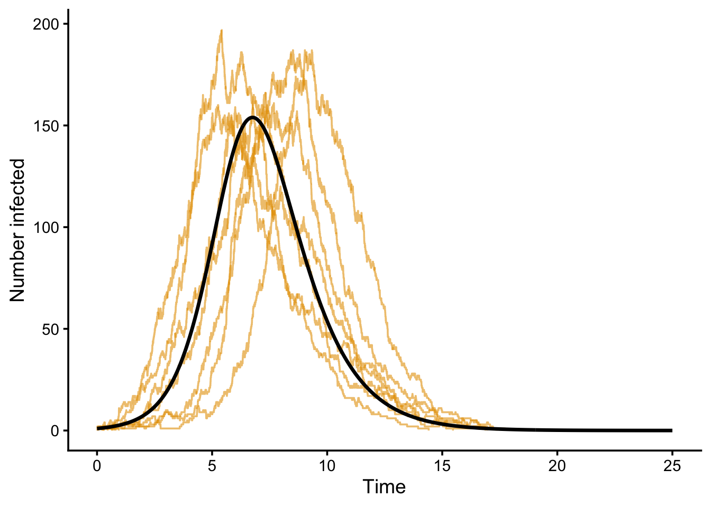
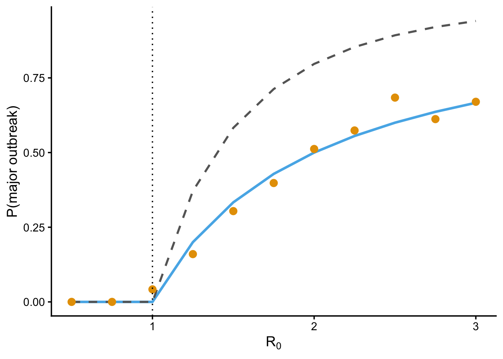
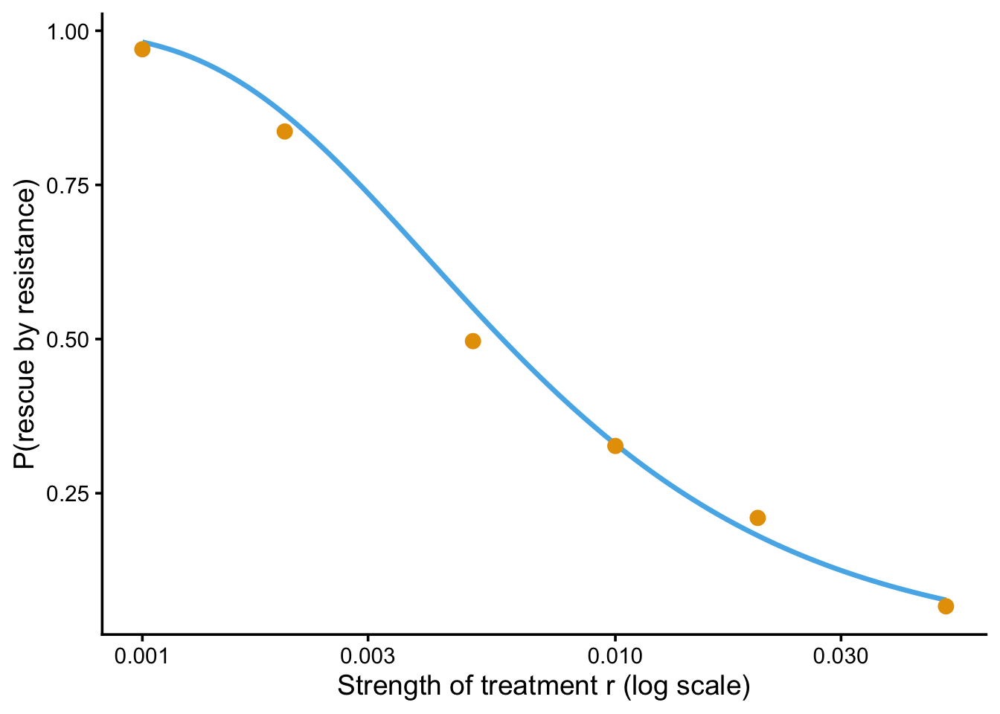

library(deSolve)
library(ggplot2)
theme_set(theme_classic(base_size = 14))
set.seed(1)T2 — Chance: epidemic takeoff and evolutionary rescue
Day 1 · branching processes
The idea. A single infected person entering a susceptible population, and a single resistant bacterium in a patient on antibiotics, are the same problem. Each is one lineage that grows on average but can be lost by chance while it is still rare. Below we simulate both and compare them with one formula.
Part A · Does the epidemic take off?
A stochastic SIR model (Gillespie algorithm)
The ODE in T1 follows proportions and assumes an infinite population. Here we follow individual events in a population of \(N\):
| Event | Rate | Change |
|---|---|---|
| infection | \(\beta S I / N\) | \(S \to S-1,\; I \to I+1\) |
| recovery | \(\gamma I\) | \(I \to I-1,\; R \to R+1\) |
The Gillespie algorithm repeats the following. Draw the waiting time to the next event from an exponential distribution with the total rate. Then pick which event happens, with probability proportional to its rate.
gillespie_sir <- function(N, beta, gamma, I0 = 1, tmax = Inf) {
S <- N - I0; I <- I0; R <- 0; t <- 0
n_max <- 2 * N + 1 # every individual is infected and recovers at most once
rec <- matrix(NA_real_, n_max, 4, dimnames = list(NULL, c("time", "S", "I", "R")))
k <- 1; rec[k, ] <- c(t, S, I, R)
while (I > 0 && t < tmax) {
a_inf <- beta * S * I / N
a_rec <- gamma * I
a_tot <- a_inf + a_rec
t <- t + rexp(1, a_tot) # waiting time
if (runif(1) < a_inf / a_tot) { # which event?
S <- S - 1; I <- I + 1
} else {
I <- I - 1; R <- R + 1
}
k <- k + 1; rec[k, ] <- c(t, S, I, R)
}
as.data.frame(rec[1:k, , drop = FALSE])
}N <- 1000; gamma <- 1; R0 <- 2
runs <- do.call(rbind, lapply(1:20, function(i)
cbind(gillespie_sir(N, beta = R0 * gamma, gamma = gamma), run = i)))
sir_ode <- function(t, x, p) with(as.list(c(x, p)),
list(c(-beta * S * I, beta * S * I - gamma * I, gamma * I)))
ode_out <- as.data.frame(ode(c(S = 1 - 1/N, I = 1/N, R = 0), seq(0, 25, 0.05),
sir_ode, c(beta = R0 * gamma, gamma = gamma)))
ggplot(runs, aes(time, I, group = run)) +
geom_step(colour = "#E69F00", alpha = 0.6) +
geom_line(data = ode_out, aes(time, I * N), inherit.aes = FALSE, linewidth = 1.2) +
labs(x = "Time", y = "Number infected")
Takeoff probability
Early on, \(S \approx N\). Each infected person then infects others at rate \(\beta\) until they recover at rate \(\gamma\). Each next event is an infection with probability \(\beta/(\beta+\gamma)\), so the number of secondary cases is geometric with mean \(R_0\). Haldane’s argument (below) then gives
\[ P(\text{takeoff}) = 1 - \frac{1}{R_0} \quad (R_0 > 1). \]
Haldane’s argument in three lines
Let \(\eta\) be the probability that a lineage eventually dies out. A lineage dies out only if all of its offspring lineages die out, so \(\eta = \sum_k P(k \text{ offspring})\, \eta^k = G(\eta)\).
- Geometric offspring with mean \(R_0\): \(G(\eta) = 1/(1 + R_0(1-\eta))\), so \(\eta = 1/R_0\).
- Poisson offspring with mean \(R_0\): \(G(\eta) = e^{R_0(\eta - 1)}\), which has no closed-form solution. Solve it numerically.
# Faster version: stop as soon as the outcome is clear
takeoff <- function(N, R0, gamma = 1, threshold = 0.1 * N) {
S <- N - 1; I <- 1
while (I > 0 && (N - S) < threshold) {
a_inf <- R0 * gamma * S * I / N
if (runif(1) < a_inf / (a_inf + gamma * I)) { S <- S - 1; I <- I + 1 } else I <- I - 1
}
I > 0
}
R0_vec <- seq(0.5, 3, by = 0.25)
reps <- 500
p_sim <- sapply(R0_vec, function(R0) mean(replicate(reps, takeoff(N = 1000, R0 = R0))))
p_poisson <- sapply(R0_vec, function(R0) {
if (R0 <= 1) return(0)
1 - uniroot(function(e) e - exp(R0 * (e - 1)), c(0, 1 - 1e-6))$root
})df <- data.frame(R0 = R0_vec, sim = p_sim,
geometric = pmax(0, 1 - 1 / R0_vec), poisson = p_poisson)
ggplot(df, aes(R0)) +
geom_line(aes(y = geometric), linewidth = 1.2, colour = "#56B4E9") +
geom_line(aes(y = poisson), linewidth = 1, linetype = "dashed", colour = "grey40") +
geom_point(aes(y = sim), size = 3, colour = "#E69F00") +
geom_vline(xintercept = 1, linetype = "dotted") +
labs(x = expression(R[0]), y = "P(major outbreak)")
Same mean, different variance, different answer. Superspreading (high variance in secondary cases) makes outbreaks less likely to take off. That is the starting point for a project.
Part B · Does resistance rescue the population?
A population of \(N\) sensitive bacteria is treated, and each generation it shrinks by a factor \(1 - r\). Each new cell is resistant with probability \(u\). Resistant cells grow by a factor \(1 + s\) per generation. Offspring numbers are Poisson.
rescue <- function(N, r, s, u, max_gen = 20000, threshold = 2 / s) {
wt <- N; mut <- 0
for (g in 1:max_gen) {
wt <- rpois(1, wt * (1 - r))
mut <- rpois(1, mut * (1 + s))
new <- rbinom(1, wt, u) # mutation among new offspring
wt <- wt - new; mut <- mut + new
if (wt == 0 && mut == 0) return(0) # extinction
if (mut > threshold) return(1) # resistant lineage established: rescue
}
NA
}
N <- 1e4; u <- 1e-5; s <- 0.02
r_vec <- c(0.001, 0.002, 0.005, 0.01, 0.02, 0.05)
p_resc <- sapply(r_vec, function(r) mean(replicate(300, rescue(N, r, s, u)), na.rm = TRUE))Theory. While it declines, the sensitive population produces about \(N/r\) cells in total, so about \(Nu/r\) mutants. Each of them escapes loss with probability \(\approx 2s\) (Haldane, for Poisson offspring with mean \(1 + s\)). The number of successful mutants is then roughly Poisson, so
\[ P(\text{rescue}) \approx 1 - \exp\!\left(-\frac{2 N u s}{r}\right) \qquad \text{(Orr \& Unckless 2014).} \]
r_fine <- 10^seq(-3, log10(0.05), length.out = 100)
ggplot() +
geom_line(aes(r_fine, 1 - exp(-2 * N * u * s / r_fine)), linewidth = 1.2, colour = "#56B4E9") +
geom_point(aes(r_vec, p_resc), size = 3, colour = "#E69F00") +
scale_x_log10() +
labs(x = "Strength of treatment r (log scale)", y = "P(rescue by resistance)")
The one rule behind both
For a rare lineage whose mean offspring number is just above 1,
\[ P(\text{establishment}) \;\approx\; \frac{2\,(\text{mean} - 1)}{\text{variance}} . \]
- Resistant mutant: mean \(1 + s\), Poisson variance \(\approx 1\), which gives \(2s\).
- New epidemic: mean \(R_0\), geometric variance \(R_0(1+R_0) \approx 2\), which gives \(R_0 - 1 \approx 1 - 1/R_0\).
Exercises
- In Part A, how does the takeoff probability change if you start with \(I_0 = 5\)? Predict first: with independent lineages, \(P = 1 - (1/R_0)^{I_0}\).
- In Part B, plot \(P(\text{rescue})\) against \(N\) on a log axis. Where is the switch from “almost never” to “almost always”?
- Start Part B with 5 resistant cells already present (standing variation). When does this matter more than new mutations?
- Rerun Part B with \(N = 1000\) and \(u = 10^{-4}\). That keeps \(2Nus\) the same, so the theory curve does not change, but the simulations fall below it at small \(r\). Why? Hint: the theory assumes the sensitive population declines deterministically. Compare \(r\) with \(1/N\).
Project hooks
- Time-dependent dosing \(r(t)\); density-dependent advantage of resistance; overdispersed (negative binomial) secondary cases; takeoff with seasonality. See the project menu, family B.